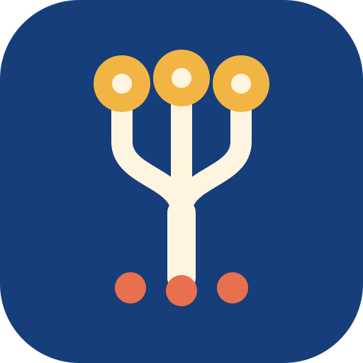
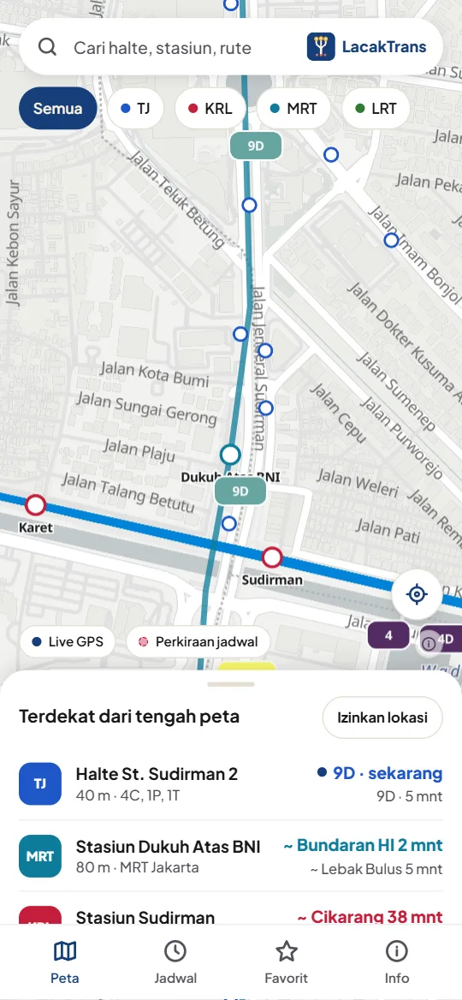
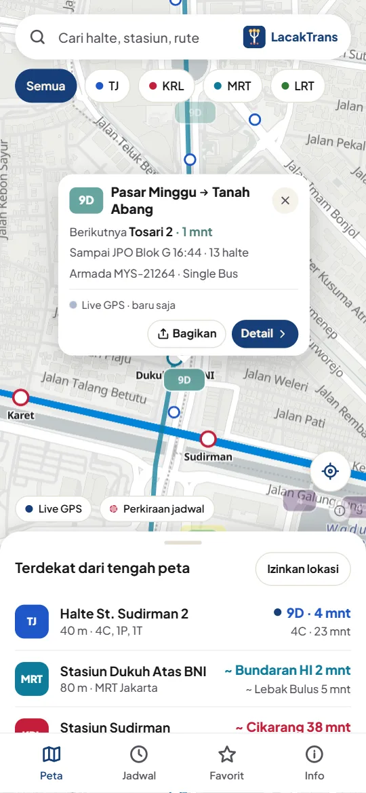
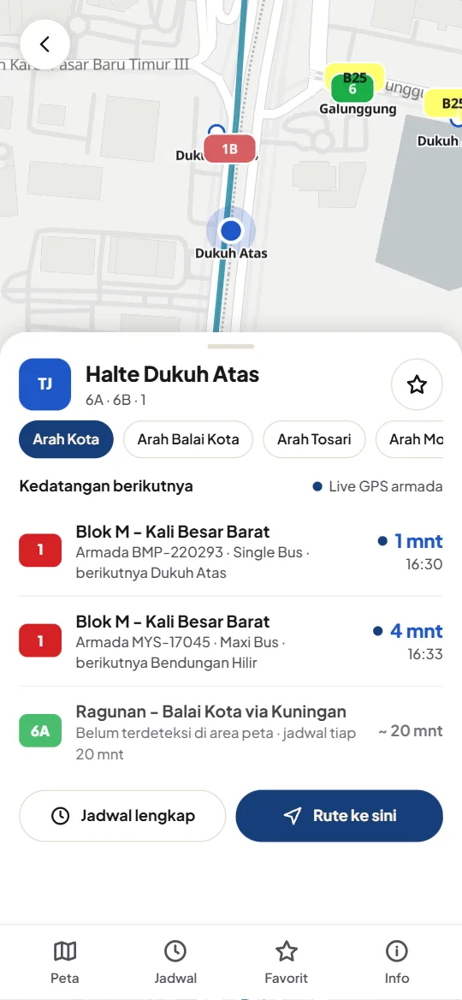
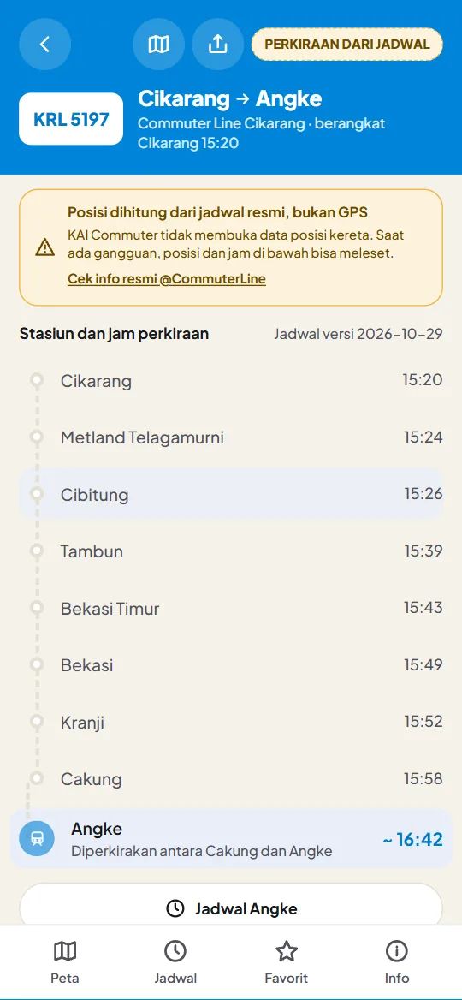

LacakTrans
Risyad Abdala Ramadhan
Telusuri Jalur, Hubungkan Perjalanan
- Versi
- —
- Ukuran
- —
- Android
- 5.1+
- Harga
- Gratis
APK belum diterbitkan. Sementara itu, pakai versi web; isinya sama dengan aplikasi Android.
Pindai kode ini dengan kamera HP Android untuk membuka halaman ini di HP, lalu ketuk Unduh APK.
Tampilan aplikasi




Posisi bus berasal dari GPS armada TransJakarta; posisi kereta diperkirakan dari jadwal.
Apa yang baru
Cara memasang di HP Android
- Ketuk Unduh APK di atas. Google Drive terbuka; ketuk tombol unduh, lalu Tetap download bila diminta.
- Setelah selesai, buka berkas LacakTrans-versi.apk dari notifikasi unduhan atau dari aplikasi File → Download.
- Bila muncul pesan bahwa HP tidak diizinkan memasang aplikasi dari sumber ini, ketuk Setelan, nyalakan Izinkan dari sumber ini, lalu kembali.
- Ketuk Instal. Bila Google Play Protect memberi peringatan, ketuk Detail lainnya → Tetap instal. Peringatan ini muncul karena LacakTrans tidak dipasang lewat Play Store.
- Buka LacakTrans. Izinkan lokasi bila ingin melihat halte dan stasiun terdekat; tanpa izin itu peta tetap bisa dipakai.
Cara memperbarui
Saat ada versi baru, LacakTrans menampilkan pemberitahuan dengan tombol Unduh. Anda juga bisa kembali ke halaman ini kapan saja. Pasang APK baru langsung di atas versi lama, tidak perlu menghapus aplikasi. Favorit dan setelan tetap tersimpan.
Tentang aplikasi
LacakTrans menampilkan posisi dan jadwal transportasi umum Jakarta dan sekitarnya dalam satu peta, untuk menjawab pertanyaan yang paling sering: kendaraan saya di mana sekarang, dan kapan sampai di halte atau stasiun saya?
- Bus TransJakarta live. Posisi dari GPS armada, diperbarui tiap beberapa detik, lengkap dengan halte berikutnya dan perkiraan tiba.
- KRL, MRT, LRT Jabodebek, LRT Jakarta. Posisi diperkirakan dari jadwal dan ditandai jelas, tidak dibuat seolah-olah live.
- Satu peta. Semua moda di satu layar, dengan filter per moda dan halte atau stasiun terdekat dari Anda.
- Bagikan perjalanan. Tautan rute, Google Maps, atau kartu Story untuk WhatsApp, Instagram, TikTok, dan Facebook.
- Tanpa akun, tanpa iklan. Favorit dan setelan hanya di HP Anda.
- Bahasa Indonesia & English, tema gelap dan terang.
LacakTrans adalah aplikasi independen, tidak berafiliasi dengan TransJakarta, KAI Commuter, MRT Jakarta, maupun LRT.
Pertanyaan umum
Kenapa LacakTrans tidak ada di Play Store?
Untuk saat ini LacakTrans dibagikan langsung sebagai berkas APK lewat halaman ini. Halaman ini selalu berisi versi terbaru, jadi cukup bagikan tautan ini.
Apakah aman dipasang?
APK di halaman ini ditandatangani dengan kunci resmi LacakTrans, jadi pembaruan hanya bisa dipasang di atas aplikasi asli. Unduh hanya dari halaman ini, jangan dari berkas yang diteruskan orang lain.
Apakah favorit saya hilang saat memperbarui?
Tidak. Pasang versi baru di atas versi lama; favorit dan setelan tetap tersimpan di HP.
Kenapa posisi kereta disebut perkiraan?
KRL, MRT, dan LRT belum membuka data posisi kereta. LacakTrans menghitung posisinya dari jadwal, jadi ditandai perkiraan dan bisa berbeda dari kereta sebenarnya. Posisi bus TransJakarta berasal dari GPS armada.
Saya memakai iPhone atau laptop.
Gunakan versi web. Isinya sama dengan aplikasi Android.
Pemasangan diblokir atau gagal.
Pastikan izin Instal aplikasi tidak dikenal sudah dinyalakan untuk aplikasi yang membuka APK (Chrome, Drive, atau File). Bila muncul "Aplikasi tidak terpasang" karena versinya bentrok, hapus dulu LacakTrans versi uji coba lalu pasang ulang.
Izin yang diminta
LacakTrans hanya meminta izin lokasi, untuk mencari halte dan stasiun terdekat dan memusatkan peta ke posisi Anda. Lokasi dibaca di HP dan tidak pernah dikirim ke server mana pun. Tanpa akun dan tanpa izin lain. Penjelasan lengkapnya ada di Kebijakan Privasi.